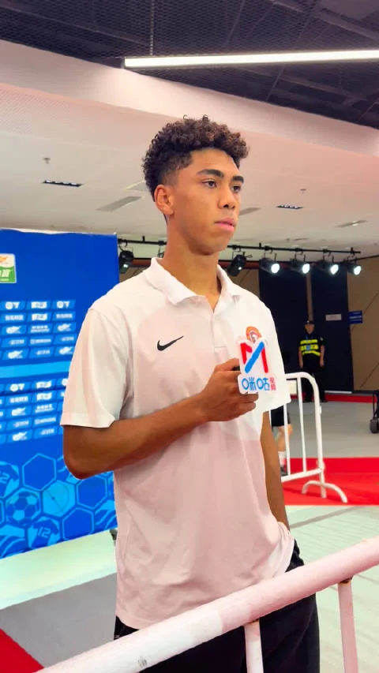
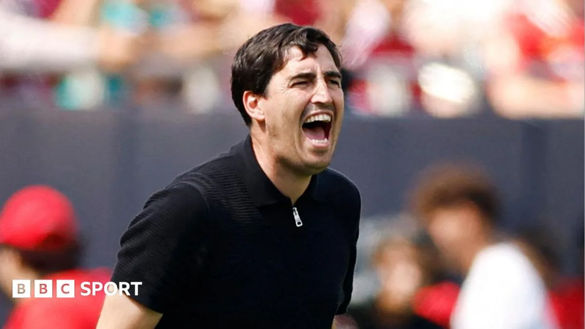

01
张稀哲和吴曦：本土中场的老将价值
两位老将联手制造14球，依然是中国足球中场的顶梁柱。
今天，一条关于张稀哲和吴曦的消息在足球圈里传开：这两位老将本赛季在中超已经联手制造了相关数量个进球。这个数字放在如今外援当道的中超，显得格外扎眼。要知道，张稀哲已经三十好几，吴曦也早已过了而立之年，但他们在场上的作用，依然不是年轻球员能轻易替代的。
张稀哲在北京国安，一直是中场的节拍器。他的传球视野和定位球功夫，在国内球员里属于顶尖。吴曦在上海申花，更多时候是B2B中场的角色，攻防两端都能看到他的身影。这两个人，一个偏组织，一个偏全能，风格互补，却都保持着稳定的输出。
为什么老将还能这么能打？一方面，他们的经验是年轻球员比不了的。场上什么时候该控节奏，什么时候该冒险传球，这些判断力需要比赛去喂。另一方面，他们的自律和职业态度，保证了身体状态没有明显下滑。很多球迷感叹，现在的年轻中场，谁能接过他们的班？
对于我们普通人来说，这其实是个很好的提醒：年龄不是限制，持续学习和保持自律，在任何领域都能让你保持竞争力。就像这两位老将，他们用行动证明，只要心气还在，年龄只是个数字。
伊恩的观察
老将的价值在于经验与稳定，年轻人需要时间成长，但自律和态度是决定职业生涯长度的关键。
02
上一场 张洪福赛后采访
年轻球员的赛后采访，藏着成长的密码。

昨天中超赛场边，一个年轻的身影站在镜头前。张洪福，这个名字对很多球迷来说还陌生，但他刚刚完成了一场赛后采访。具体说了什么，报道没有细说，但这一幕本身，就值得聊聊。
背景是，中超联赛激战正酣，各队都在为排名拼抢。年轻球员能获得出场机会，已经不易；赛后还能被安排接受采访，更说明教练组对他的信任和培养意愿。张洪福不是成名球星，他的每一次亮相，都是在积累经验。
变化在于，从默默训练到面对镜头，这中间隔着心理和技术的双重跨越。赛后采访看似简单，实则考验球员的复盘能力：刚才那个球为什么传丢了？那次防守站位是否合理？在公众面前说出来，需要勇气，更需要清醒的自我认知。
机制上，足球运动员的成长，技术训练只是基础，比赛阅读和心态调整才是分水岭。赛后采访就像一面镜子，逼着球员在众目睽睽之下梳理自己的表现。这种即时复盘，能加速经验的内化，让年轻球员更快从“踢球”进化到“懂球”。
对普通人来说，这也有启发。我们工作或学习后，有多少人愿意主动回顾过程、听取反馈？很多人怕暴露不足，选择回避。但张洪福这样的年轻球员，正在用行动告诉我们：每一次总结，都是下一次进步的起点。
行动建议：从今天起，每周花十分钟，复盘一件你做过的事。问自己三个问题：哪里做得好？哪里可以改进？下次遇到类似情况，我会怎么做？坚持一个月，你会看到自己的变化。
张洪福的采访内容或许会很快被遗忘，但那种敢于面对镜头的姿态，值得每个正在成长的人记住。
伊恩的观察
赛后采访是年轻球员的成长加速器，普通人也能通过定期复盘，把经验变成能力。
03
中超战报：山东泰山力克海港，成都蓉城五连平
积分榜上，山东泰山击败强敌，成都蓉城则陷入平局怪圈。
中超本轮，山东泰山和上海海港的较量是焦点战。结果，山东泰山力克上海海港，拿到了一场关键的胜利。这场比赛，泰山队展现出了更强的求胜欲望和战术执行力。而上海海港，虽然实力不俗，但在这场对决中没能发挥出应有水平。
另一场比赛，成都蓉城又平了，这已经是他们连续第五场平局。五连平，听起来有点无奈，但也能看出这支球队的韧性——他们很难被击败，但同时也缺乏一锤定音的能力。成都蓉城本赛季开局不错，但最近陷入平局怪圈，积分榜上的位置可能有些尴尬。
从战术上看，山东泰山赢在防守反击的效率，而成都蓉城的问题在于进攻端办法不多。足球比赛就是这样，有时候你控制了场面，但就是进不了球，反而被对手一个反击打穿。
对于普通球迷来说，看中超不只是看比分，更要看球队的战术变化和球员的临场发挥。山东泰山这场胜利，可能会改变争冠格局；而成都蓉城需要尽快找到赢球的感觉，否则可能会被第一集团拉开差距。
伊恩的观察
足球比赛胜负往往在细节，防守反击的效率和平局背后的进攻乏力，都值得球队反思。
04
伊拉奥拉的难题：一场热身赛，上下半场判若两队
伯恩茅斯在利兹联的热身赛中，上半场和下半场表现迥异，新帅面临阵容调整的烦恼。

英超球队伯恩茅斯在季前热身赛中与利兹联交手，结果让新帅伊拉奥拉有些头疼。这场比赛，球队上下半场表现判若两队，上半场可能踢得有声有色，下半场却完全不在状态。这种反差，让伊拉奥拉在赛后有很多需要思考的地方。
热身赛的目的，本来就是考察球员、试验阵容。伊拉奥拉刚接手球队，需要尽快确定主力框架和战术打法。但球员的状态起伏，让他的计划变得不那么顺利。可能上半场用的那套阵容配合默契，下半场换人之后，攻防体系就乱了。
对于教练来说，季前赛的每一分钟都很宝贵。他需要观察球员的体能状况、技术特点，还要测试不同的战术组合。但球员的状态不可能每场都稳定，这就要看教练如何调整和取舍。
我们普通人也能从中得到启发：做任何事情，计划赶不上变化。就像伊拉奥拉，他需要灵活应变，根据球员的实际状态来调整策略。不要死板地坚持一套方案，适时改变，才能应对各种情况。
伊恩的观察
热身赛暴露问题是好事，教练需要灵活调整。我们做事也应如此，根据实际情况不断修正计划。
05
转会传闻：热刺接触奥斯梅恩，各队暗流涌动
英超转会市场传闻四起，热刺对那不勒斯前锋奥斯梅恩感兴趣。
转会窗口开启，各种传闻满天飞。今天，有消息说热刺对那不勒斯前锋奥斯梅恩进行了接触。奥斯梅恩是意甲顶级射手，如果热刺能签下他，锋线实力将大大提升。不过，这只是传闻，最终能否成行，还要看谈判进展。
除了奥斯梅恩，还有关于吉马良斯、格拉利什、加克波等球员的转会传闻。这些名字，都是各自球队的重要球员，如果转会成真，可能会改变英超的格局。但转会市场变数很大，很多传闻最后都不了了之。
对于球迷来说，转会期就像一场大戏，每天都有新剧情。但我们要理性看待，不要被传闻牵着鼻子走。真正官宣的消息才靠谱。
从产业角度看，转会传闻反映的是各俱乐部的战略规划。热刺想补强锋线，可能是为了新赛季冲击欧冠资格。其他球队也在积极运作，都是为了提升竞争力。
我们普通人看转会，可以关注球员的转会费、工资等数字，但更重要的是看球队的引援思路。这就像我们做职业规划，要明确自己的目标，然后有针对性地去争取资源。
伊恩的观察
转会传闻虽多，但理性看待。俱乐部引援有战略考量，个人发展也需要明确目标和规划。
无障碍文字记录
伊恩 大家好，欢迎收听伊恩每日·运动。今天是2026年8月3号，星期一。刚过去的这个周末，足球场上可是有不少故事。中超赛场上，老将们用表现证明自己依然是球队的中流砥柱；英超那边，利物浦在季前热身赛里也给我们留下了不少谈资。今天，咱们就一起聊聊这些赛场内外的门道。
伊恩 先来说说咱们中超。根据新浪体育的报道，张稀哲和吴曦这两位老将，本赛季到目前为止已经联手制造了14个进球。你没听错，是14个！在这个大家都觉得新人辈出的年代，这两位三十多岁的老将，依然是本土中场里最亮眼的存在。张稀哲在北京国安，吴曦在上海申花，两个人加起来都快70岁了，但数据不会骗人。他们靠的是什么？不是速度，不是身体，而是那份对比赛的理解，那种在关键时刻能稳住节奏、送出致命一传的能力。这就像你打篮球，年轻人能跑能跳，但真正到了决胜时刻，球还是要交到那个最稳的老大哥手里。
咱们来拆解一下这14个球是怎么来的。张稀哲的定位球和直塞，吴曦的后插上和远射，两人在各自球队里都是中场的节拍器。张稀哲本赛季在国安，多次通过角球和任意球助攻队友得分，他的传球视野和脚法，依然是中超顶级。吴曦在申花，则更多是后排插上，利用对方防守注意力集中在前锋身上的空当，完成致命一击。这14个进球，不是偶然，是两人用经验和意识换来的。
有人可能会问，为什么老将还能这么强？这里有个误区，很多人觉得足球是年轻人的运动，拼的是速度和体能。但中场这个位置，恰恰是经验最值钱的地方。年轻球员能跑，但跑位是否合理？传球时机是否恰当？这些都需要比赛积累。张稀哲和吴曦的跑动距离可能不如以前，但他们的每一次触球，每一次跑位，都更有效率。这就是为什么他们还能占据主力位置。
当然，代价也有。老将的伤病恢复慢，体能下降快，比赛密度大的时候，状态会有起伏。但他们的价值在于，能在关键比赛中稳定军心。比如国安在落后时，张稀哲能拿住球，控制节奏，给队友信心。申花在僵持时，吴曦能突然前插，打破平衡。这种作用，数据上不一定体现，但教练和队友都明白。
对咱们普通人来说，这其实是个启示。不管你是踢野球还是健身，经验和方法往往比蛮力更重要。你可能跑不过二十岁的小伙子，但你可以靠意识提前卡位，靠技巧完成动作。就像张稀哲和吴曦，他们用脑子踢球，我们也可以用脑子锻炼。比如跑步，不是越快越好，而是找到适合自己的节奏，坚持下来。
后续看点，这两位老将还能保持多久？随着赛季深入，体能和伤病是考验。但至少现在，他们证明了自己依然是本土中场的标杆。咱们不妨多关注他们的比赛，看看他们是怎么用智慧踢球的。好了，今天就聊到这儿，明天见。
听众 伊恩，那为什么中超现在还是老将当道？年轻球员难道没有机会吗？
伊恩 好问题。其实不是年轻球员没机会，而是足球这个项目，中场位置尤其需要经验。你看张稀哲，他那个视野，那个传球时机，都是靠一场一场比赛喂出来的。年轻球员有冲劲，但往往在高压下容易犯错。老将能稳住军心，这是数据体现不出来的价值。当然，年轻球员也在成长，比如我们接下来要提到的张洪福，就是新生代的代表。
伊恩 昨天赛后，一个年轻面孔站在了镜头前。张洪福，这个名字对很多球迷来说可能还有点陌生，但赛后采访的机会，本身就说明了一些东西——教练组认可他的表现，媒体也注意到了他。虽然我们还没拿到采访的完整内容，但能在这个年纪获得这样的待遇，至少证明他在场上做了正确的事。
张洪福是谁？根据公开信息，他是近年来涌现出的年轻球员，具体位置和表现细节还需要更多比赛来验证。但这件事让我想到一个更普遍的现象：年轻球员的成长，往往不是一蹴而就的。他们需要机会，需要老将的传帮带，也需要在一次次实战中积累经验。赛后采访，对一个新人来说，既是一种鼓励，也是一种压力——说得好，是加分；说得不好，可能被放大解读。
我们普通人打篮球、踢足球时，也常遇到类似的时刻：第一次被队友信任，第一次在关键回合承担责任。那种紧张和兴奋交织的感觉，其实和职业球员面对镜头差不多。关键不在于你说了什么，而在于你之后怎么做。
回到张洪福，这次采访只是一个起点。真正的考验是接下来的比赛，他能不能持续拿出稳定的表现。对中国足球来说，新生代球员的成长，需要的是耐心和持续的关注，而不是一场论英雄。希望他能把这次采访当作动力，继续在场上证明自己。而我们作为球迷，不妨多给年轻人一些时间和空间，让他们在试错中成长。毕竟，老将的坚守和新人的冲击，才是联赛最动人的风景。
伊恩 昨晚中超赛场，山东泰山和上海海港硬碰硬，泰山赢下了这场硬仗。川观新闻的报道说得很清楚：山东泰山力克上海海港。力克，不是轻松取胜，是咬着牙啃下来的。海港是争冠热门，泰山是传统强队，这场球，泰山赢在整体防守和高效反击。具体比分我们暂时没拿到，但过程肯定不轻松。
你可能会问，泰山凭啥能赢？关键就在防守。海港的进攻火力在中超是数一数二的，但泰山用整体防守，把海港的进攻空间压得很小。然后，抓住机会打反击，一击致命。这种打法，对体能和执行力要求极高，泰山做到了。
再说成都蓉城，又平了，五连平。你听着是不是有点着急？球迷肯定更急。但换个角度，五连平说明他们没输，只是赢不了。问题出在进攻端，怎么把优势转化成胜势，是蓉城接下来要解决的课题。
这场球对你我普通人有什么启发？其实，不管是踢球还是过日子，防守反击都是种智慧。先稳住阵脚，别乱，再找机会。就像泰山，不跟海港硬碰硬，用整体防守和反击赢球。而蓉城，五连平，就像你做事总差一口气，得想想怎么突破。
接下来，泰山这场胜利能提升士气，海港得调整。蓉城呢，得解决进攻问题。咱们继续看。
听众 伊恩，那泰山赢球的关键是什么？是战术布置还是球员个人发挥？
伊恩 从有限的报道来看，泰山队应该是做好了防守反击的预案。面对海港这样的强队，你不可能对攻，那正中对手下怀。泰山队用紧密的防守限制对手的进攻空间，然后抓住机会打反击。这就像咱们平时踢球，碰到比自己强的对手，先稳住后防，再找机会偷一个。当然，球员的执行力也很关键，战术再好，也得有人跑到位、传到位。
伊恩 英超季前赛，利物浦对阵利兹联，一场看似平常的热身赛，却让主教练伊拉奥拉赛后陷入了沉思。BBC Sport的报道说，这场比赛上下半场判若两队，给伊拉奥拉留下了不少需要思考的问题。
咱们先还原一下现场。上半场，利物浦的阵容和节奏都挺正常，攻防转换流畅，球员之间的配合也默契，感觉像是按照既定计划在走。但到了下半场，伊拉奥拉大面积换人，阵容一变，整个球队的节奏和默契度就明显下降了。利兹联那边呢，趁机打出了几次有威胁的进攻，利物浦的防线一度吃紧。这种“上下半场两个样”的情况，在季前赛里其实很常见，但伊拉奥拉赛后说“有很多需要思考的问题”，说明他看到的不仅仅是比分，而是更深层的东西。
那这背后到底是怎么回事呢？咱们得先明白季前赛的意义。季前赛不是正式比赛，胜负不重要，重要的是考察球员、磨合阵容、试验战术。教练通常会安排两套完全不同的阵容，上半场一套，下半场一套，就是为了看看哪些球员能融入体系，哪些组合更默契。所以上下半场表现有差异，其实很正常，甚至可以说是教练有意为之。但伊拉奥拉的“思考”，可能在于：为什么下半场那套阵容的磨合效果这么差？是球员个人能力问题，还是战术安排不合理？这直接关系到新赛季的阵容深度和轮换策略。
说到阵容深度，这可是个大学问。一支球队一个赛季要踢很多场比赛，不可能每场都用同一套首发，轮换是必须的。但如果替补球员和主力差距太大，或者替补阵容之间缺乏默契，那轮换的时候就会出问题。就像你炒菜，火候不同，味道就不同。主力阵容是“大火快炒”，替补阵容可能就是“小火慢炖”，你得找到每种食材最适合的烹饪方式，才能保证整桌菜都好吃。伊拉奥拉现在面临的就是这个问题：他需要搞清楚，哪些球员适合首发，哪些球员适合替补登场，以及如何调整战术，让替补阵容也能发挥出应有的水平。
那这个问题对普通人有什么影响呢？其实咱们平时运动也一样。比如你打篮球，首发五个人配合默契，但替补一上来就乱了阵脚。这时候教练就得思考，是调整首发，还是加强替补的训练，或者改变战术打法。这跟伊拉奥拉的处境是一样的。所以，看足球不只是看热闹，还能学到团队管理和自我提升的智慧。
最后，咱们得说，季前赛暴露问题其实是好事。现在发现问题，总比赛季开始后再发现强。伊拉奥拉有足够的时间去调整和试验，找到最适合利物浦的阵容和战术。咱们就拭目以待，看看新赛季的利物浦会以什么样的面貌出现在我们面前。毕竟，季前赛的“两个样”，说不定就是新赛季“大变样”的前奏呢。
听众 那季前赛的表现能代表新赛季的走势吗？
伊恩 不能完全代表，但有一定参考价值。季前赛主要目的是调整状态、磨合阵容，有些球员可能还没进入最佳状态，有些新援还在适应。但如果你连续几场都暴露同样的问题，那教练就得重视了。比如防守漏洞、中场失控这些，如果不解决，到了正式比赛就会被对手抓住。所以，季前赛就像一次体检，发现问题，及时调整。
伊恩 今早的转会流言板上，最抓眼球的一条：热刺接触了那不勒斯前锋奥斯梅恩。注意，是“接触”，不是“报价”，更不是“达成协议”。BBC的流言板把它放在头条，但措辞很谨慎——approach，试探性的接触。
奥斯梅恩什么级别？过去几个赛季，他是意甲最稳定的进球机器之一，身体对抗强，冲刺速度快，射门方式多样，既能禁区内抢点，也能拉出来做球。对热刺来说，如果真能把他带到北伦敦，那进攻端的威胁会直接上一个档次。
但转会这事，尤其是这种级别的球员，变数太大了。那不勒斯要价不会低，球员本人的薪资要求、经纪人佣金、其他豪门的竞争，每一个环节都可能让谈判崩掉。所以现在这个阶段，球迷可以期待，但别太当真。
对咱们普通人来说，转会流言其实是个观察足球产业的好窗口。你看，一条流言背后，是球探报告、数据模型、商业谈判、球员个人意愿的博弈。下次你看到“某队接触某球员”的新闻，可以多问一句：为什么是他？球队缺什么？这比单纯看比分有意思多了。
至于奥斯梅恩最终会不会穿上热刺球衣，咱们就搬个小板凳，慢慢看。转会窗关闭前，什么都有可能发生。
伊恩 好了，今天的内容差不多就这些。咱们来回顾一下：中超赛场上，张稀哲和吴曦用14个进球证明老将的价值；山东泰山力克海港，展现战术执行力；成都蓉城五连平，需要解决进攻难题；年轻球员张洪福开始崭露头角；英超那边，利物浦在季前赛中发现阵容问题，转会市场上也暗流涌动。足球就是这样，有老将的坚守，有新人的冲击，有战术的博弈，也有未来的期待。无论你是踢球还是看球，都能从中找到乐趣和启发。
伊恩 感谢收听今天的伊恩每日·运动。如果你对足球有什么看法，或者想问关于运动健身的问题，欢迎在评论区留言。我是伊恩，咱们下期再见！